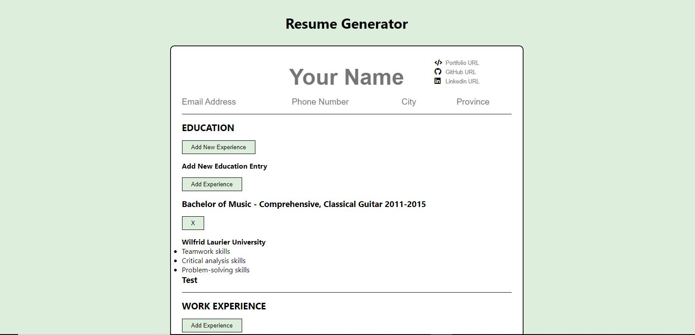

Today was spent working through the React documentation and beginning my first React project in months - a resume generator.
When I first looked at React last summer, it was when I was working my way through the online Altcademy Bootcamp program. While I got a pretty strong introduction to the basics, I was overwhelmed by a lot of the ES6 features that I didn't really understand, and I think I rushed it a bit in terms of going from JS to React too quickly. In starting the resume generator today, I think that a more practical approach is going to be much better for me, and even today alone, after 3 hours of dedicated work with props and state management, I feel a lot more confident that I won't have to rely on walk-through tutorials anymore in the near future.
I started the resume generator by cleaning up the boilerplate files, then added components for each section of the resume. From there, I added the state management in the Resume component and began on the resume header, then education sections. My main focus was on trying to structure the components in a way that would allow for easy reuse between sections.
Here is a snapshot of the resume generator project after a few hours of work:
